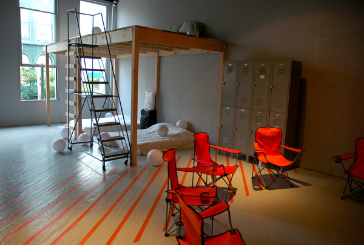

basekamp > Events
Plausible Artworlds
alt.SPACE summit (at SPACE media centre, London, June-July 2007)
Team Players for Plausible Artworlds (at ICA Philly, Jan-Mar 2007)
Strategic Planning Weekend (at Basekamp space, Sept-Oct 2006)
www.PlausibleArtworlds.org (for updated info about the project)
Strategic Planning Weekend
DATES: 18-September-2006 Through 31-October-2006 (+ Halloween Potluck!)
LOCATION: Basekamp space, Philadelphia

PARTICIPANTS:
A Constructed World (Torino, Italy / Melbourne, Australia)
Basekamp (Philadelphia, USA)
Center for getting Ugly (Tampa, USA)
C.cred (London, UK / Malmö, Sweden)
Democratic Innovation (Copenhagen, Denmark)
Institute for Advanced Architecture (NYC/Chicago/LA, USA)
Orgacom (Amsterdam, Netherlands / Istanbul, Turkey)
Pond (San Francisco, USA)
Temporary Services (Chicago, USA)
Trinity Session (Johannesburg, South Africa)
What, How and for Whom [WHW] (Zagreb, Croatia)
LOCATION: BASEKAMP space, 723 Chestnut Street, 2nd Floor, Philadelphia, usa.
DESCRIPTION:
Recently, Liaisons from 10 selected local and international collaborative art groups have 'camped-out' at the BASEKAMP space in Philadelphia, during a 4-day Strategic Planning Weekend for "Plausible Artworlds", the large-scale international convention and exhibition project envisioned to be hosted in Philadelphia during 2008.
The Strategic Planning Weekend was constructed as an experimental conference center, with useful and disruptive interfaces developed by the artists to aid in the meeting and planning process. Intensive planning sessions detailing modes of practices and collaborative research were held at BASEKAMP, and at various other outdoor and indoor public spaces in Philadelphia. This exhibition, on view for 6 weeks, is a chance for visitors to get a sense of what went on during the big weekend here, and to add to the discussion if they choose.
The planning group will continue to meet online after the hosted weekend in Philadelphia, using an evolving website to contribute discussion and planning (http://plausibleartworlds.org). This team, in communication with other groups, will continue to further develop plans for the future of the "Plausible Artworlds > Convention and Exhibition" planned for 2008.
CONTACT: +1-215-206-8176 / projects (at) basekamp (dot) com
SUPPORT:
Financial support generously provided by the Philadelphia Exhibitions Initiative.
Organized in part with InLiquid.com